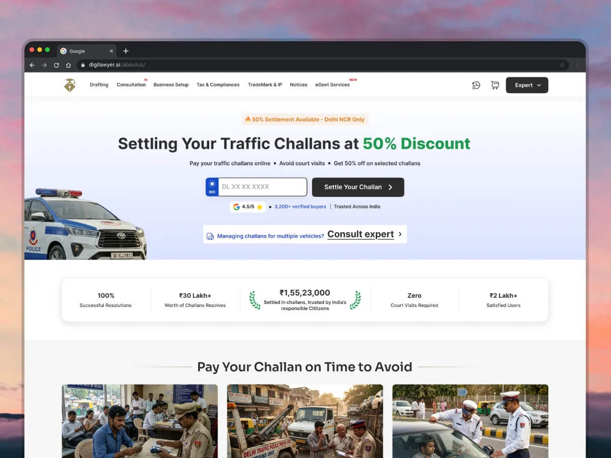
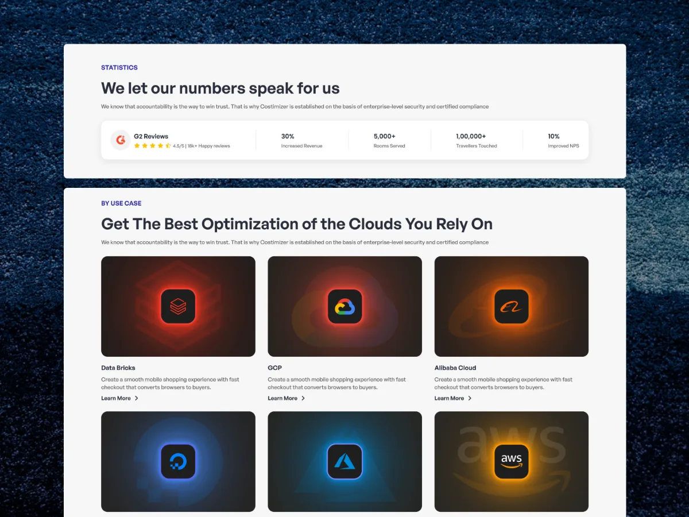
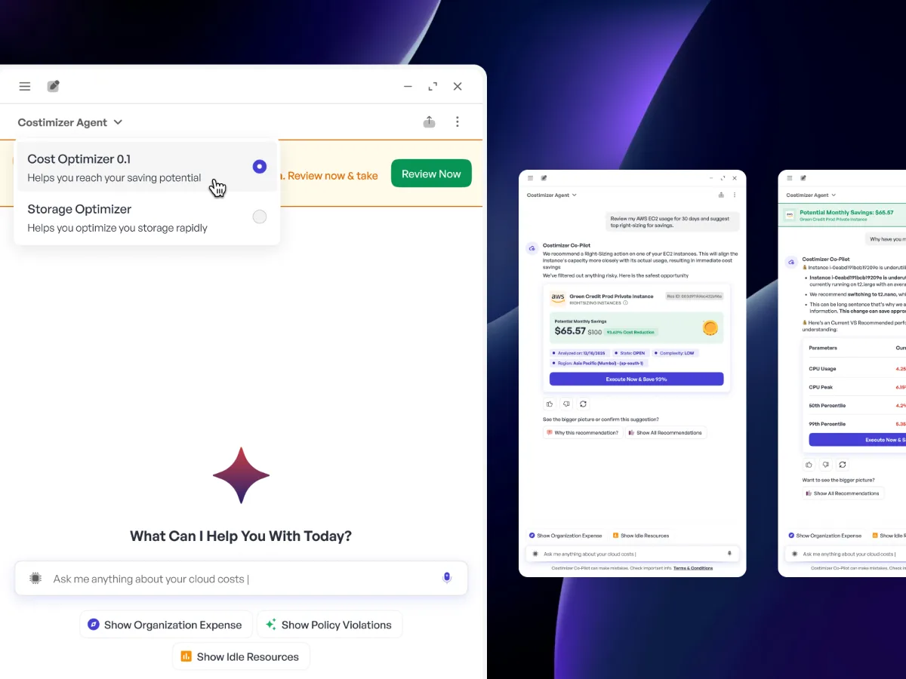
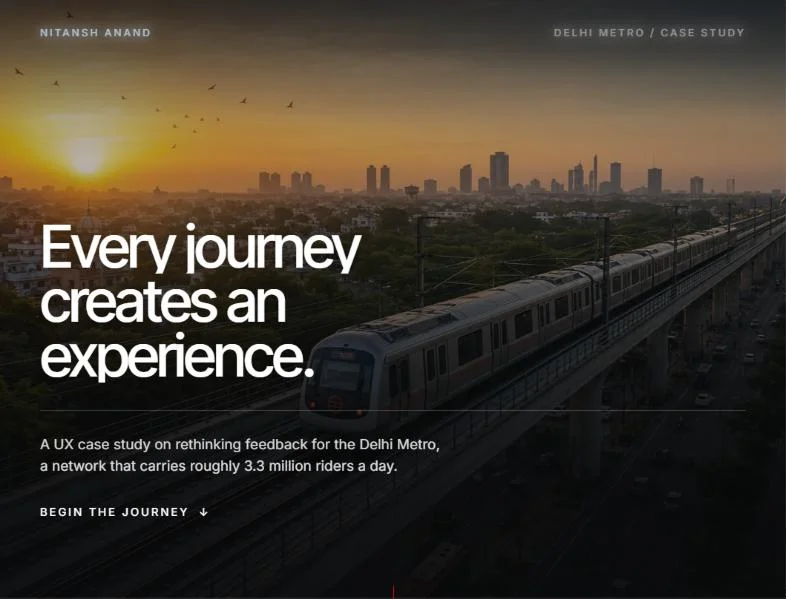
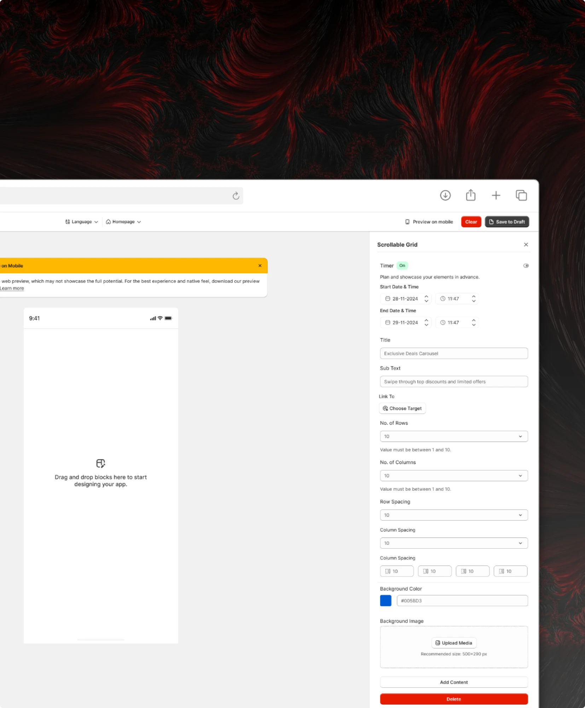
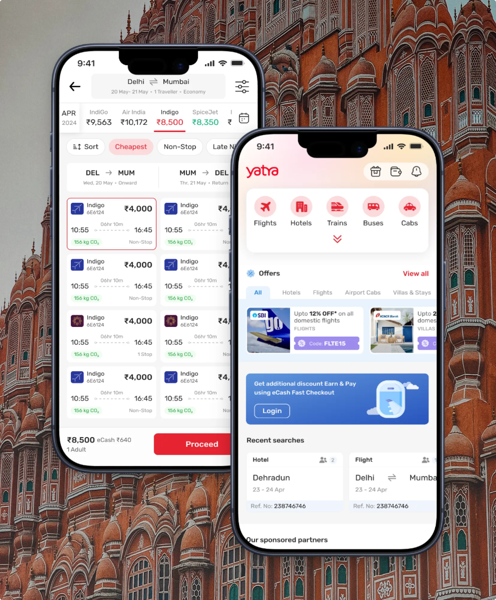
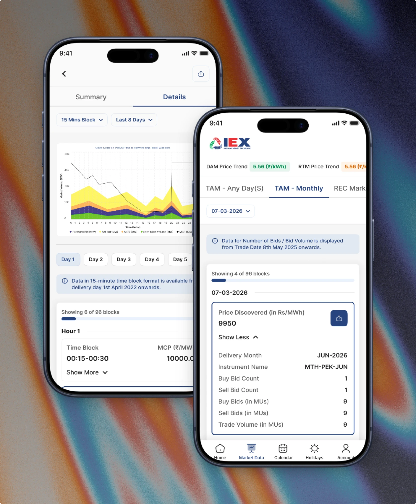
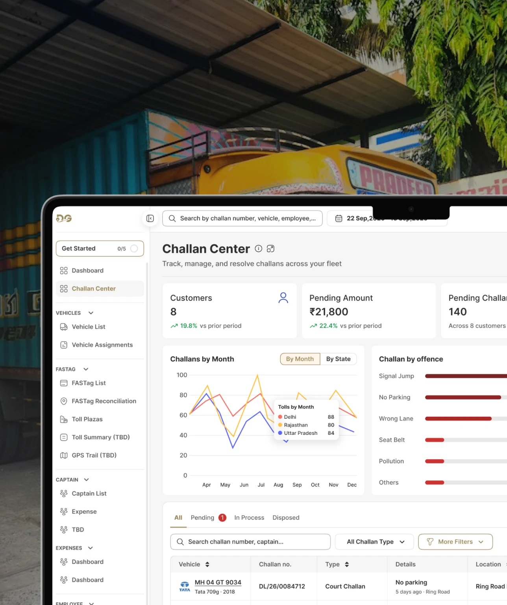

A challan page redesign, reused for three page types
Service pages · DigiLawyer
I’m Nitansh Anand, a product designer working on design systems and enterprise UX. Over 2+ years I’ve worked with and , and I’m currently an Associate Product Designer at .
I own the system side end to end: tokens, master components, accessibility and developer handoff. Lately that means , , and . I work closely with engineering and founders, turning loose briefs into patterns that ship.
What the work moved
Four outcomes from shipped work, not descriptions of what I did.

Service pages · DigiLawyer

Design systems · BigOhTech

AI product · Costimizer

Public sector · Delhi Metro

80+ users
Shopify app builder, five stars.

−28%
Time to book a flight.

Simpler screens
Marketplace UI, updated.

In progress
Managing large fleets.
Career journey
A design degree, two internships that shipped, and the job where I stopped drawing screens one at a time and started building the thing that makes them.
Oct 2024 – Present
BigOhTech
Own the system side end to end: tokens, master components, accessibility and developer handoff. The section library built here now assembles three live SaaS products.
Jan 2024 – Jul 2024
Maxlence · Gurugram, India
Rebuilt the marketing site through iterative user testing rather than a single redesign. Conversion rate up 33%.
Sep 2023 – Nov 2023

Delhi Metro · DMRC, Delhi, India
Designed the station and in-transit passenger feedback system, and worked it through DMRC’s operational constraints to handoff.
2020 – 2024
JK Lakshmipat University · Jaipur, India
Where the interest in systems started: four years of interaction design, ending in the Delhi Metro project.
From early ambiguity to scale-stage complexity, the same five moves: find the real friction, tie it to a number, and build something the next project can reuse.
Find where friction actually sits, in user behaviour, product logic or the tooling around the work. It is rarely where the brief says it is.
Tie every design decision to something measurable: conversion, time to first action, support load, hours saved.
Work with engineering and founders from the start, so feasibility shapes the design rather than arriving after it.
Ship reusable patterns, not isolated screens. Tokens, master components and specs that outlive the project they came from.
Put it in front of real users and watch. 35+ sessions on the Costimizer assistant said more than any round of reviews.
Toolkit
A design system is only as good as its handoff, so what matters is less the tools than how well they talk to each other. These are the ones that do.